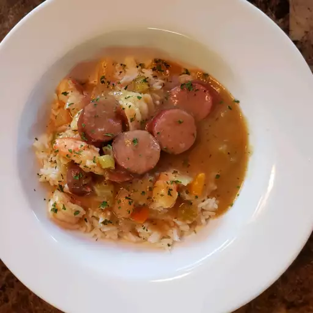

Gumbo

Classic Louisiana Gumbo
This dish will warm your heart on a cold day.
Serve over rice with additional seasoning on the side if you like it spicier, as I do. Enjoy.
Ingredients
- 1 cup canola oil
- 1 cup all-purpose flour
- 1 onion, diced
- 1 green bell pepper, diced
- 3 stalks celery, diced
- 1 pound andouille sausage, chopped
- 2 tablespoons Cajun seasoning
- 2 cloves garlic, chopped
- 1 teaspoon freshly ground black pepper
- 6 cups low-sodium chicken stock
- 1 pound peeled and deveined small shrimp
Steps
- Cook and stir oil and flour in a skillet over medium heat until mixture is thick and the color of peanut
butter, about 20 minutes.
- Stir onion, green bell pepper, and celery into flour mixture; cook and stir until softened, about 5 minutes.
Add sausage; cook and stir until browned, about 5 minutes. Add Cajun seasoning, garlic, and black pepper;
cook and stir until fragrant, about 2 minutes.
- Pour chicken stock over vegetable-sausage mixture; reduce heat to low and simmer for 30 minutes. Add shrimp
and cook until shrimp are pink and cooked through, about 10 minutes.